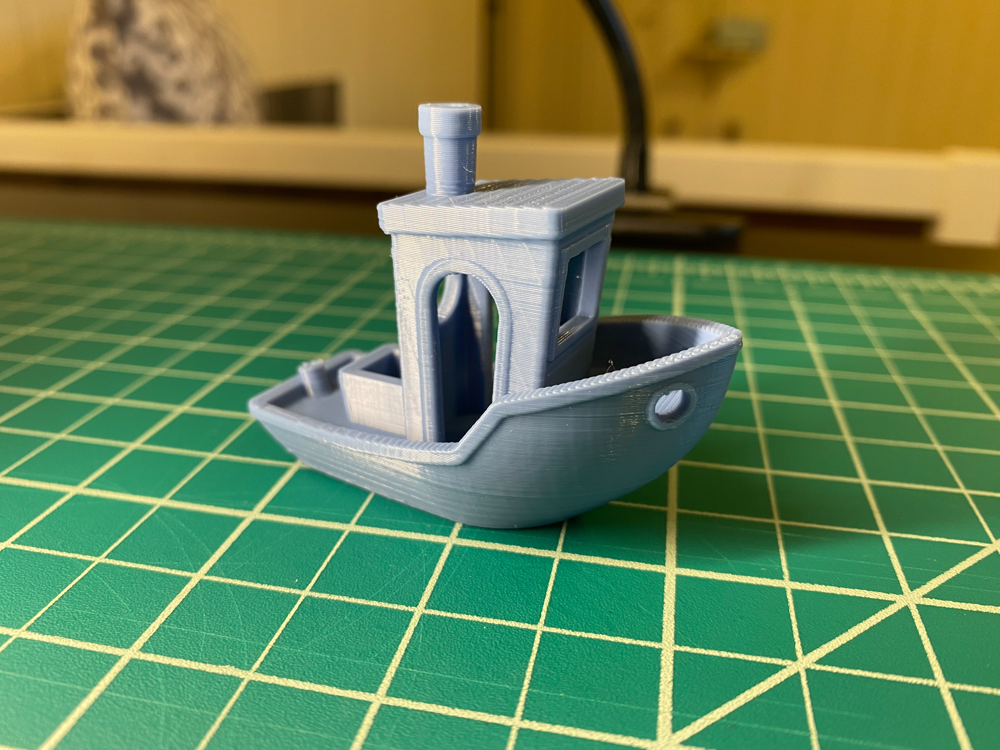

Printer Setup and Tuning
I bought my Ender 3 about two months ago, so I don't have any pictures from the build process. I recall it taking me about a half an hour to put it together (this was with an extra pair of hands helping to hold things and locate screws). I've also built a Prusa i3 Mk3 and the Ender was far easier, as it came partially assembled compared with the bazillion parts in the Prusa box. The Ender also worked right out of the box - we were able to quickly level the bed and use the included white PLA to print one of the test files that came on the SD card, a little piggy bank. It came out great!
Here I document a series of test prints produced by the Ender. I've included an image of the prints in order for reference. I printed these in 3D Solutech Denim PLA at 200C with a bedplate temperature of 60C.
| Description | Print Time | Filament used | Height | Width |
|---|---|---|---|---|
| 2cm low quality cube with brim | 21 minutes | 4 g | 19.69 mm | 19.96 mm |
| 2cm standard quality cube with brim | 27 minutes | 4 g | 19.81 mm | 20.02 mm |
| 2cm high quality cube with brim | 55 minutes | 4 g | 19.73 mm | 20.00 mm |
| 2cm cube with concentric top and bottom (dynamic quality) | 33 minutes | 4 g | 19.82 mm | 19.83 mm |
| Tube 2cm in diameter and .5cm high with a single extrusion wall thickness | 2 minutes | 0 g | 4.75 mm | 19.87 mm |
| Tube 2cm in diameter and .5cm high with a double extrusion wall thickness and random z-seam alignment | 4 minutes | 0 g | 4.73 mm | 19.88 mm |
| A cylinder 2cm in diameter exported with a 0.1cm tolerance, printed on its round side with supports | 26 minutes | 3 g | 19.93 mm | 19.00 mm |
| A cylinder 2cm in in diameter exported with a 0.005cm tolerance | 39 minutes | 3 g | 20.00 mm | 19.95 mm |
| 20.0mm +/- 0.5mm cube with a 5.0mm +/- 0.5mm hole through it. | 58 minutes | 5 g | 19.88 mm | 19.98x20.11 mm, hole 4.94 mm |
I wanted to get my printer settings nailed down, so I did some additional test prints. First, I printed a heat tower (below). You can see that there wasn't much difference up the tower at different heats in terms of print quality. If you look very closely, the 190-200 degree range is less shiny than the rest of the tower. It seems that this PLA is pretty forgiving. I'm going to stick with 200 degrees, as I like my prints to be less shiny and it's within the range that is suggested on my filament package.
I printed an all-in-one overhang test at 100% infill. Besides a little bit of peeling (I didn't print it with a brim or glue) I think it turned out very well. The overhangs look great on top all the way to 80degrees, and the 70 and 80 degree overhangs are the only ones that droop a bit on the bottom (I think they still look pretty good, though). It will be handy to have this piece as a reference for this printer.
Finally, I printed a benchy, because everyone with a 3D printer must, by law, print a benchy. I think it turned out great! There was a slight level shift when it started printing the overhang of the boat railing - I'm not sure if that is an anomaly or something to look further into.
